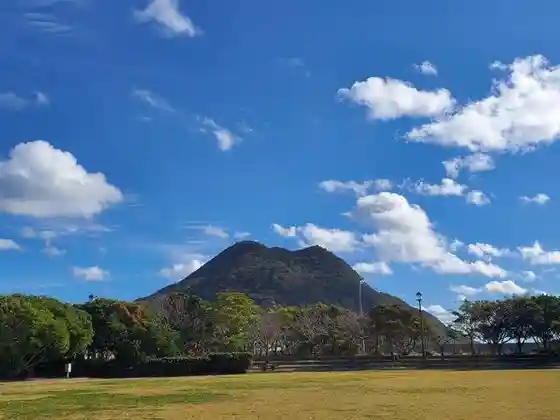
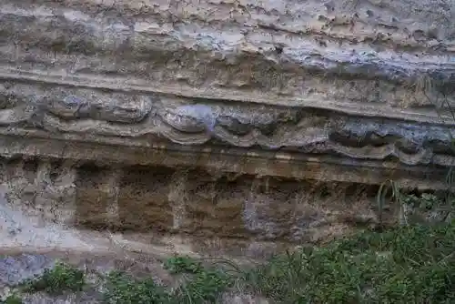
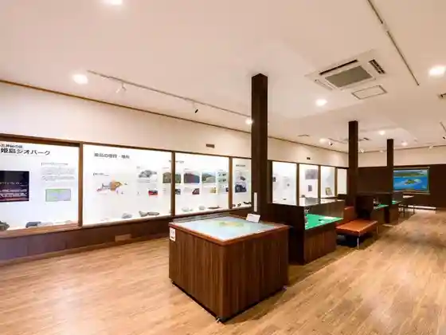
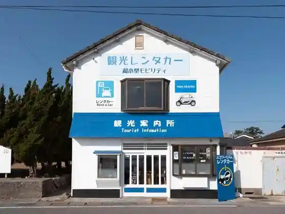

Yahazu Gaku (Yahazudake)
Himeshima, Oita · 0978-87-2266 · Official / source link

Oita Himeshima Jio Park Kazangaumidashi Ta Shinpi no Shima
Himeshima, Oita · 0978-87-2266 · Official / source link
Taikai no Komboryutoramina
Himeshima, Oita · 0978-87-2266 · Official / source link

Toki to Nature no Mare Ato Jio Park Ten'ichi Ne
Himeshima, Oita · 0978-87-2266 · Official / source link

Himeshima Ekotsurizumu
Himeshima, Oita · 0978-87-2022 · Official / source link

Nokyo Machiai Tokoro Baiten
Himeshima, Oita · 0978-87-3618 · Official / source link
Higashi Miyage Mise
Himeshima, Oita · 0978-87-3436 · Official / source link
Marui Shoji
Himeshima, Oita · 0978-87-3505 · Official / source link
Bi Bon
Himeshima, Oita · 0978-87-2844 · Official / source link
Oita Himeshima
Himeshima, Oita · 070-2671-8924 · Official / source link
O Shokuji Tokoro Hime no Ie
Himeshima, Oita · 0978-87-3956 · Official / source link
O Shokuji Tokoro
Himeshima, Oita · 0978-87-3666 · Official / source link
O Shokuji Tokoro Ka no Ya
Himeshima, Oita · 0978-87-2870 · Official / source link
Kakure Ie Kitchin Oto Lama
Himeshima, Oita · 070-4805-5369 · Official / source link
Asagimadara Kyusoku Chi
Himeshima, Oita · 0978-87-2266 · Official / source link
Himeshima Lighthouse
Himeshima, Oita · 0978-87-2279 · Official / source link
Himeshima Nanafushigi
Himeshima, Oita · 0978-87-2279 · Official / source link
Hato no Kirikabu
Himeshima, Oita · 0978-87-2279 · Official / source link
Himeshima Beach Campground
Himeshima, Oita · 0978-87-2279 · Official / source link
Himeshima Beach
Himeshima, Oita · 0978-87-2279 · Official / source link
Himeshima Shoya Furusho Ie
Himeshima, Oita · 0978-87-2113 · Official / source link
Hime Go So Sha (Himekososha)
Himeshima, Oita · 0978-87-2111 · Official / source link
Oobi (Otarashi) Hachiman Sha
Himeshima, Oita · Official / source link
Hyoshi Mizu (Hyoshimizu) Onsen (Kenkokanri Center)
Himeshima, Oita · 0978-87-2840 · Official / source link
Kannon Saki (Himeshima no Kokuyo Ishi Sanchi)
Himeshima, Oita · 0978-87-2266 · Official / source link
Himeshima Minato (Son'ei Ferii Noriba)
Himeshima, Oita · 0978-87-2021 · Official / source link
Himeshima Buru Line
Himeshima, Oita · Official / source link
Himeshima Town Hall
Himeshima, Oita · 0978-87-2281 · Official / source link